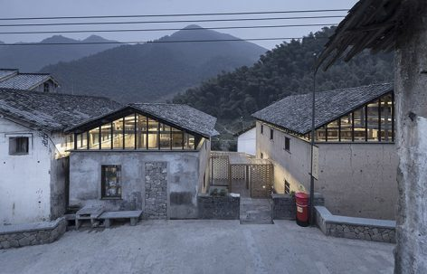

该项目需要考虑三个关键性的因素：1.梯形的场地平面使建筑体量在采光和视野方面受到限制；2.叠加的使用功能：需要包含学生公寓和商品公寓；3.建筑的整体外观。建筑师基于场地特征对这三个要素重新进行了阐释，使最终的建筑在具备独特性的同时，还将环境周围的本质特征反映出来.
The project is comprised of three main elements : The site plan of the lot with its trapezoidal form resulting in a volume with constraints with regard to sunshine and views; the program of superimposed habitat: student housing as well as apartments for an ownership program; the overall appearance of the building. The approach consists of reinterpreting these three elements in light of the specific features of each site: the resulting architecture becomes unique, thereby reflecting the intrinsic characteristics of the context.
不规则的梯形场地定义出两个宽阔的透明大厅并将其统一起来，同时与拉德芳斯步行街的公共空间形成直接的联系。建筑倾斜的棱柱体体量传达出两种交叠的功能：学生公寓占据了底部的十个楼层，商品公寓位于上方的九个楼层，宛如朝向天空的巨大屏幕。
Thus, the atypical plan with its trapezoidal form combines while also distinguishing two large, transparent lobbies of the program while maintaining a direct relation with the public space of the promenade of La Défense. The prismatic and skewed volume expresses the two superimposed programs: the student apartments forming a ten-level base while the ownership program apartments situated above on nine levels are treated as a giant screen turned toward the sky.